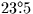
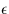
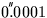
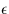
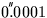

![[*]](foot_motif.gif)
This simple picture is unfortunately complicated by the difficulty of defining a suitable equator and equinox. One problem is that the Sun's apparent motion is not completely regular, due to the ellipticity of the Earth's orbit and its continuous disturbance by the Moon and planets. This is dealt with by separating the motion into (i) a smooth and steady mean Sun and (ii) a set of periodic corrections and perturbations; only the former is involved in establishing reference frames and timescales. A second, far larger problem, is that the celestial equator and the ecliptic are both moving with respect to the stars. These motions arise because of the gravitational interactions between the Earth and the other solar-system bodies.
By far the largest effect is the so-called ``precession of the equinoxes'', where the Earth's rotation axis sweeps out a cone centred on the ecliptic pole, completing one revolution in about 26,000 years. The cause of the motion is the torque exerted on the distorted and spinning Earth by the Sun and the Moon. Consider the effect of the Sun alone, at or near the northern summer solstice. The Sun `sees' the top (north pole) of the Earth tilted towards it (by about , the obliquity of the ecliptic), and sees the nearer part of the Earth's equatorial bulge below centre and the further part above centre. Although the Earth is in free fall, the gravitational force on the nearer part of the equatorial bulge is greater than that on the further part, and so there is a net torque acting as if to eliminate the tilt. Six months later the same thing is happening in reverse, except that the torque is still trying to eliminate the tilt. In between (at the equinoxes) the torque shrinks to zero. A torque acting on a spinning body is gyroscopically translated into a precessional motion of the spin axis at right-angles to the torque, and this happens to the Earth. The motion varies during the year, going through two maxima, but always acts in the same direction. The Moon produces the same effect, adding a contribution to the precession which peaks twice per month. The Moon's proximity to the Earth more than compensates for its smaller mass and gravitational attraction, so that it in fact contributes most of the precessional effect.
The complex interactions between the three bodies produce a
precessional motion that is wobbly rather than completely smooth.
However, the main 26,000-year component is on such a grand scale that
it dwarfs the remaining terms, the biggest of
which has an amplitude of only  and a period of
about 18.6 years. This difference of scale makes it convenient to treat
these two components of the motion separately. The main 26,000-year
effect is called luni-solar precession; the smaller,
faster, periodic terms are called the nutation.
and a period of
about 18.6 years. This difference of scale makes it convenient to treat
these two components of the motion separately. The main 26,000-year
effect is called luni-solar precession; the smaller,
faster, periodic terms are called the nutation.
Note that precession and nutation are simply different frequency components of the same physical effect. It is a common misconception that precession is caused by the Sun and nutation is caused by the Moon. In fact the Moon is responsible for two-thirds of the precession, and, while it is true that much of the complex detail of the nutation is a reflection of the intricacies of the lunar orbit, there are nonetheless important solar terms in the nutation.
In addition to and quite separate
from the precession/nutation effect, the orbit of the Earth-Moon system
is not fixed in orientation, a result of the attractions of the
planets. This slow (about
 per year)
secular rotation of the ecliptic about a slowly-moving diameter is called,
confusingly, planetary
precession and, along with the luni-solar precession is
included in the general precession. The equator and
ecliptic as affected by general precession
are what define the various ``mean''
per year)
secular rotation of the ecliptic about a slowly-moving diameter is called,
confusingly, planetary
precession and, along with the luni-solar precession is
included in the general precession. The equator and
ecliptic as affected by general precession
are what define the various ``mean''  reference frames.
reference frames.
The models for precession and nutation come from a combination
of observation and theory, and are subject to continuous
refinement. Nutation models in particular have reached a high
degree of sophistication, taking into account such things as
the non-rigidity of the Earth and the effects of
the planets; SLALIB's nutation
model (IAU 1980) involves 106 terms in each of  (longitude)
and  (obliquity), some as small as
 .
(longitude)
and  (obliquity), some as small as
 .
SLALIB --- Positional Astronomy Library